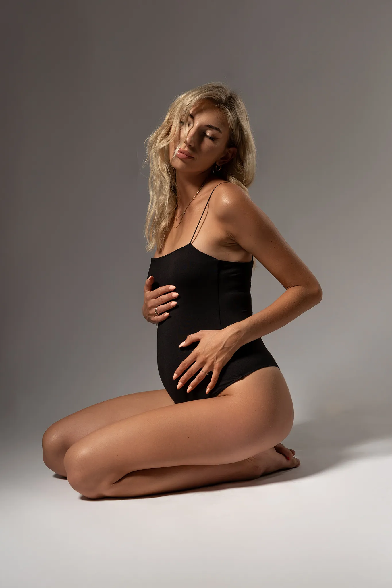
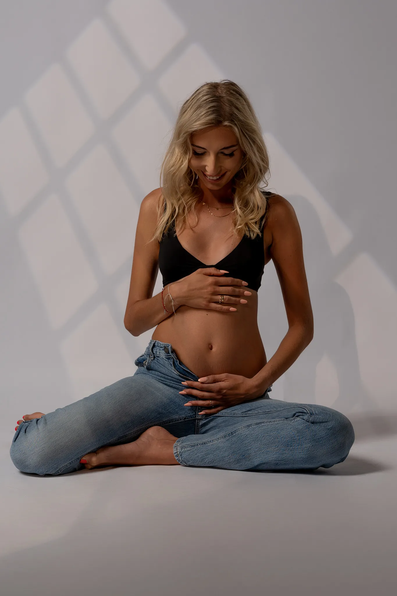

Schwangerschaftsfotografie
Momente vor dem Wunder
Schwangerschaft ist eine ganz besondere Zeit im Leben einer Frau – eine Zeit voller Vorfreude, Hoffnung und tiefer Liebe. Dein Körper trägt gerade ein kleines Wunder, und diese magische Phase verdient es, für immer festgehalten zu werden.
Portfolio Schwangerschaftsfotografie




"Life is a flame that is always burning itself out; but it catches fire again every time a child is born."
schwangerschaftsfotograf rottenburg an der laaber / babybauch shooting landshut / schwangerschaftsfotografie regensburg / babybauchfotos ingolstadt / schwangerschaftsbilder kelheim / babybauch shooting abensberg / schwangerschaftsfotograf mainburg / babybauchfotograf niederbayern / schwangerschaftsshooting outdoor / schwangerschaftsshooting studio / professionelle babybauchbilder
/ münchen fotograf / fotograf münchen / natürliche fotografie münchen / moderne fotografie münchen / stilvolle fotografie münchen / professionelle portraits münchen / fashion shooting münchen / personal branding münchen / business portrait münchen